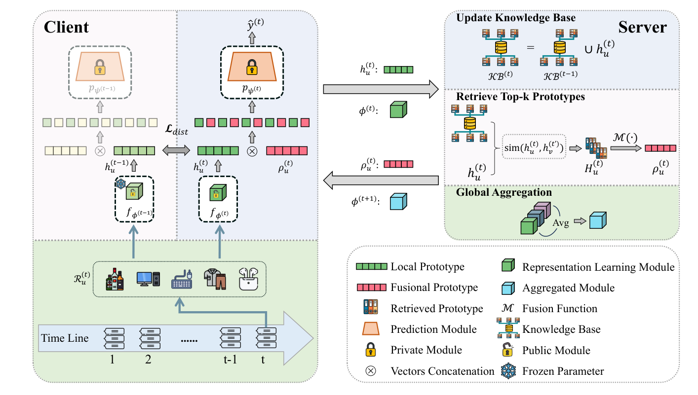

Learning Evolving Preferences: A Federated Continual Framework for User-Centric Recommendation (学习演化偏好：面向用户中心推荐的联邦持续框架)
- 会议/期刊: WWW 2026
- 作者与机构: Chunxu Zhang, Zhiheng Xue, Guodong Long, Weipeng Zhang, Bo Yang（吉林大学符号计算与知识工程教育部重点实验室；香港理工大学 PolyU AAI；悉尼科技大学 AAII）
- 推荐链路定位: 召回（会话级 Next-Item 排序）
- 研究方向: 去偏公平、可信隐私与工业架构 / 序列与会话推荐
- 论文原文: https://arxiv.org/abs/2603.17315v1
- 开源代码: https://github.com/Poizoner/code4FCUCR_www2026
TL;DR (1分钟核心速览)
现有联邦推荐把用户数据当作静态快照，既无法应对用户偏好随时间漂移导致的时间遗忘，也因客户端数据高度异构而弱化了协同个性化。FCUCR 提出两个即插即用模块：客户端侧用「时间感知自蒸馏」以历史表征模块约束当前表征模块（无需回放缓冲），服务器侧维护动态原型知识库并为每个客户端检索 top-\(k\) 相似原型做融合增强。在 XING / RetailRocket / LastFM / Tmall 四个基准、会话级全库排序协议下，挂载 SASRec 骨干后 HR@10 相对提升 12.6%–44.0%，且对 GRU4Rec、TiSASRec 骨干同样稳定增益。
Background & Motivation (背景与核心矛盾)
- 主流范式: 联邦推荐（PFedRec、FedRAP、GPFedRec）以用户为客户端、只上传参数/嵌入，在隐私约束下做个性化；会话推荐（DMI-GNN、HearInt、MiaSRec）在中心化场景建模多兴趣与意图解耦。
- 前人局限: ① 联邦方法假设用户行为静态、依赖固定数据快照，忽略偏好的连续演化，模型随会话累积而时间遗忘；② 直接聚合参数被少数大数据客户端主导，异构分布下跨用户协同关系无法被有效刻画，个性化与协同相互掣肘。
- 核心洞察 (Key Insight): 用户对物品语义的认知（由表征模块 \(f_\phi\)承载）在时间上高度稳定，而决策逻辑（由预测模块\(p_\psi\) 承载）高度个性化；同时不同用户存在可复用的时序意图模式（如"探索→决策"的转移节律）。
- 本文切入点: 表征模块共享 + 预测模块私有，用自蒸馏锁住时间连续性、用原型检索补足跨用户协同，二者解耦且互不干扰。
Method (核心方法设计)
1. 整体框架 (Overall Architecture)
每个用户为一个客户端，本地模型拆为共享表征模块 \(f_\phi\)（Transformer 编码会话）与私有预测模块\(p_\psi\)（MLP）。第\(t\)轮：客户端先用当前\(\phi^{(t)}\)计算本会话原型\(h_u^{(t)}=f_\phi(\mathcal{R}_u^{(t)})\)上传服务器；服务器并入动态知识库\(\mathrm{KB}^{(t)}\)，为每个客户端检索 top-\(k\)相似原型并融合为\(\rho_u^{(t)}\)下发；客户端将\(h_u^{(t)}\|\rho_u^{(t)}\)拼接送入\(p_\psi\)预测，同时以\(f_\phi^{(t-1)}\)为教师做自蒸馏；训练后仅上传\(\phi_u^{(t)}\) 做 FedAvg。推理时仅需一次前向 + 一次原型拼接，无额外解码开销。
flowchart TD
A["客户端会话序列 R_u^(t)"] --> B["共享表征模块 f_phi^(t)"]
B --> C["本地原型 h_u^(t)"]
C --> D["服务器动态知识库 KB^(t)"]
D --> E["Top-k 相似原型检索 + 融合 rho_u^(t)"]
E --> F["拼接 h_u^(t) || rho_u^(t)"]
F --> G["私有预测模块 p_psi"]
B --> H["时间感知自蒸馏 L_dist (教师 f_phi^(t-1))"]
G --> I["Next-Item 打分"]
2. 关键设计拆解 (Key Designs)
-
时间感知自蒸馏 (TASD)：痛点是无回放缓冲时新会话会覆盖旧偏好。做法是让当前表征模块在新数据上对齐上一轮冻结的自身输出，而非对齐旧数据： $\(\mathcal{L}_{dist}=\mathrm{MSE}\big(f_\phi^{(t)}(\mathcal{R}^{(t)}),\; f_\phi^{(t-1)}(\mathcal{R}^{(t)})\big)\)$ 直觉：约束的是"对同一输入的语义解释"而非"对旧样本的记忆"，因此零存储成本即可实现隐式时序正则，且不引入旧物品分布偏差。
-
跨用户原型迁移 (IUPR)：痛点是参数聚合被大数据客户端主导、无法表达细粒度用户关系。服务器维护 \(\mathrm{KB}^{(t)}=\mathrm{KB}^{(t-1)}\cup\{h_u^{(t)}\}_{u=1}^{N}\)，按余弦相似度为客户端\(u\)检索 top-\(k\)邻居原型\(H_u^{(t)}\)，经融合函数\(\mathcal{M}(\cdot)\)（均值或降维）得\(\rho_u^{(t)}\)，预测改为\(\hat{y}^{(t)}=p_\psi(h_u^{(t)}\|\rho_u^{(t)})\)。直觉：原型是会话级意图的压缩摘要，比原始参数更鲁棒、更隐私友好（不上传可识别信息），且"检索而非聚合"避免了异构性下的均值坍缩。
-
训练目标与效率：总目标 \(\min_{\phi,\{\psi_u\}}\sum_u \alpha_u\big(\mathcal{L}_{rec}+\lambda\mathcal{L}_{dist}\big)\)，\(\mathcal{L}_{rec}\)为会话内下一物品的交叉熵（隐式反馈正负样本），无额外负采样设计；\(\lambda=10\) 最优。效率侧支持滑窗裁剪知识库与降低原型传输频率（间隔 3 轮）以换取近似无损的性能。
Experimental Setup & Evaluation Protocol (实验设置与评估协议)
- 数据集与预处理: 按 HRNN 协议以时间戳不活跃阈值切分会话（XING 为 30 分钟），剔除
DELETE交互；测试/验证集中未在训练集出现的物品被过滤。
| 数据集 | #Users | #Items | #Sessions | 平均会话长度 | 场景说明 |
|---|---|---|---|---|---|
| 877 | 29,366 | 6,165 | 15.10 | 招聘/职位浏览 | |
| RetailRocket | 391 | 14,051 | 4,183 | 7.93 | 电商浏览日志（6 个月） |
| LastFM | 940 | 145,469 | 468,297 | 18.50 | 音乐收听 |
| Tmall | 1,746 | 123,405 | 12,594 | 37.78 | 电商购物 |
- 数据划分与防穿越 (Splitting Strategy): 每个用户最后一个会话为测试集、倒数第二个会话为验证集，其余会话按时间顺序构成训练流（会话级 Leave-Last-Session-Out，天然满足时序防穿越）。
- 排名评测协议 (Ranking Protocol): 会话级 Full-Ranking 全库排序（对全物品集打分，非采样排序），指标 HR@10 / NDCG@10；显著性用双侧 t 检验 \(p<0.05\)。
- 对比基线与超参设置: 三类基线——联邦推荐（PFedRec、FedRAP、GPFedRec）、会话推荐（Fed-DMI-GNN、Fed-HearInt、Fed-MiaSRec）、序列推荐（Fed-GRU4Rec、Fed-SASRec、Fed-TiSASRec），后两类均改造为联邦版本（前缀
Fed-）。骨干为 GRU4Rec / SASRec / TiSASRec，消融统一用 SASRec；\(k\in\{1,5,20,100,200,1000\}\)，\(\lambda\in\{0.1,1,5,10,20,50\}\)。
Key Experimental Results (实验关键数据)
1. 主实验对比 (Main Results)
| 类型 | 模型 | XING HR@10 | XING NDCG@10 | RetailRocket HR@10 | RetailRocket NDCG@10 | LastFM HR@10 | LastFM NDCG@10 | Tmall HR@10 | Tmall NDCG@10 |
|---|---|---|---|---|---|---|---|---|---|
| 联邦 | PFedRec | 0.1852 | 0.0898 | 0.2603 | 0.1706 | 0.1596 | 0.0835 | 0.2669 | 0.1451 |
| 联邦 | FedRAP | 0.2013 | 0.1318 | 0.3183 | 0.2198 | 0.2191 | 0.1198 | 0.2411 | 0.1309 |
| 联邦 | GPFedRec | 0.1804 | 0.0839 | 0.2303 | 0.1322 | 0.1532 | 0.0777 | 0.2216 | 0.1208 |
| 会话 | Fed-DMI-GNN | 0.2561 | 0.1584 | 0.2876 | 0.1983 | 0.3216 | 0.2060 | 0.2068 | 0.1145 |
| 会话 | Fed-MiaSRec | 0.1692 | 0.0910 | 0.2473 | 0.1439 | 0.2894 | 0.1756 | 0.2451 | 0.1385 |
| 序列 | Fed-GRU4Rec | 0.1765 | 0.0939 | 0.2392 | 0.1432 | 0.3291 | 0.1918 | 0.2274 | 0.1248 |
| 序列 | w/ FCUCR | 0.2311 | 0.1563 | 0.3454 | 0.2687 | 0.3362 | 0.1946 | 0.2394 | 0.1420 |
| 序列 | Fed-SASRec | 0.1800 | 0.0954 | 0.2574 | 0.1527 | 0.3271 | 0.1907 | 0.2898 | 0.1571 |
| 序列 | w/ FCUCR | 0.2882 | 0.1863 | 0.3602 | 0.2879 | 0.3426 | 0.1944 | 0.3074 | 0.1947 |
| 序列 | Fed-TiSASRec | 0.2375 | 0.1549 | 0.2608 | 0.1602 | 0.3359 | 0.1964 | 0.2718 | 0.1507 |
| 序列 | w/ FCUCR | 0.2983 | 0.1891 | 0.3750 | 0.2996 | 0.3553 | 0.2187 | 0.2967 | 0.1593 |
相对骨干提升（HR@10）：SASRec 上 XING +60.1%、RetailRocket +39.9%、LastFM +4.7%、Tmall +6.1%；TiSASRec 上 XING +25.6%、RetailRocket +43.8%、LastFM +5.8%、Tmall +9.2%；GRU4Rec 上 XING +30.9%、RetailRocket +44.4%、LastFM +2.2%、Tmall +5.3%。所有增益均通过 \(p<0.05\) 显著性检验。
2. 消融实验 (Ablation Study)
| 模型 (SASRec 骨干) | XING HR@10 | XING NDCG@10 | RetailRocket HR@10 | RetailRocket NDCG@10 | LastFM HR@10 | LastFM NDCG@10 | Tmall HR@10 | Tmall NDCG@10 |
|---|---|---|---|---|---|---|---|---|
| FCUCR 完整 | 0.2882 | 0.1863 | 0.3602 | 0.2879 | 0.3426 | 0.1944 | 0.3074 | 0.1947 |
| w/o TASD | 0.2731 | 0.1795 | 0.3360 | 0.2590 | 0.3309 | 0.1967 | 0.2926 | 0.1860 |
| w/o IUPR | 0.2556 | 0.1754 | 0.3324 | 0.2692 | 0.3287 | 0.1912 | 0.2520 | 0.1412 |
3. 关键实验发现 (Key Findings)
- IUPR 是更"硬"的增益来源，TASD 是更"稳"的增益来源：去掉 IUPR 后 Tmall HR@10 从 0.3074 跌至 0.2520（−18.0%）、NDCG@10 从 0.1947 跌至 0.1412（−27.5%），跌幅远超去掉 TASD（−4.8% / −4.5%）；说明在数据稀疏的 Tmall 上，跨用户原型补足的信息量比时序正则更关键，而 TASD 的贡献在会话数最多的 XING 上最明显（HR@10 −5.2%）。
- TASD 的收益并非单调，存在"稳定性—可塑性"权衡：LastFM 上去掉 TASD 后 NDCG@10 反而微升（0.1944→0.1967），说明该数据集偏好漂移快、过强的历史对齐会抑制适应；这与超参分析中 \(\lambda=10\)最优、\(\lambda\) 过大性能回落的结论一致，印证了正则强度需按漂移速率调节。
- 原型数量 \(k\)呈倒 U 型，且抗遗忘性可被直接观测：\(k\) 从 1 增至中等值性能上升、过大则因噪声原型下降；图 2(a) 追踪各客户端首个会话在训练轮次上的 HR，基线（SASRec/GRU4Rec/TiSASRec/MiaSRec）随会话累积持续下滑，而 FCUCR 保持高位；图 2(b)(c) 显示原型增强后正负样本预测概率分布明显分离，而 Fed-SASRec 的负样本概率大量堆积在 0.5 附近，判别力不足。
Highlights & Limitations (亮点、对比与审稿批判)
- 与代表作对比 (vs. Prior Work): 与 PFedRec/FedRAP/GPFedRec 的本质差异在于它们只做空间维度的客户端个性化、假设数据静态，FCUCR 显式引入时间维度的持续学习；与 F3CRC 相比，本文进一步处理了会话流式到达与跨客户端"空间遗忘"，且以原型检索替代参数聚合，规避异构性下的聚合坍缩；与 Fed-DMI-GNN/HearInt 等图结构会话模型相比，本文不依赖跨会话图构建，通信开销更低且天然隐私友好。
- 可迁移亮点: ① "在新数据上对齐旧模型输出"的无回放自蒸馏可直接迁移到任何存储受限的端侧增量推荐；② 原型检索替代参数聚合的思路可迁移到多场景/跨域推荐中的知识迁移，用会话级摘要做软邻居检索比全局 FedAvg 更能保留长尾客户端信号。
- 审稿级局限批判: ① 用户规模极小（391–1,746 客户端），与工业级百万级客户端的通信与知识库检索开销（top-\(k\)全库相似度计算为\(O(N\cdot|\mathrm{KB}|)\)）未被评估，缺乏真实大规模或线上 A/B 证据；② 原型知识库跨轮累积存在隐私侧信道风险（会话级表征可能被反演），文中仅用 LDP 加噪做了附录级验证，未给出形式化隐私预算与效用权衡曲线；③ 所有基线均为作者自行改造的
Fed-版本，缺少与原论文中心化结果的对照，公平性存疑。
Rating (四维评分)
- 方法创新性 (Novelty): ⭐⭐⭐⭐ （核心机制与方法设计具备明确创新性，理论与实验动机支撑充分）
- 评估协议与实验扎实度 (Protocol & Experiments): ⭐⭐⭐ （主流公开数据集评测完整，包含多基线对比与消融实验验证）
- 写作与数学规范度 (Clarity & Rigor): ⭐⭐⭐⭐⭐ （问题形式化定义清晰，核心模块数学推导与架构阐述严谨易读）
- 工业落地与复现价值 (Industrial & Practical Value): ⭐⭐⭐⭐ （兼顾推荐效果增益与训练/推理效率，具备实际场景迁移参考价值）